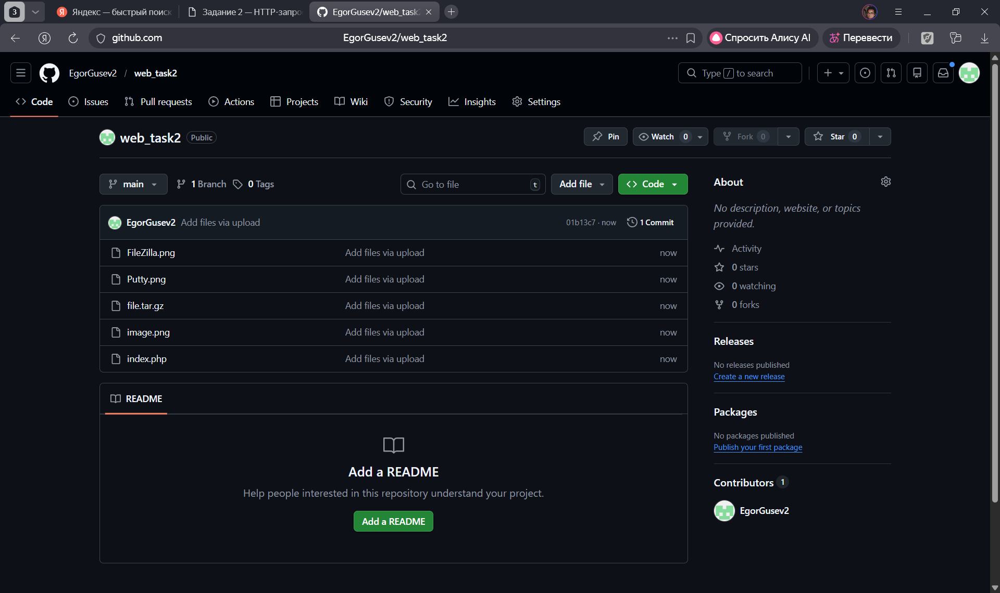
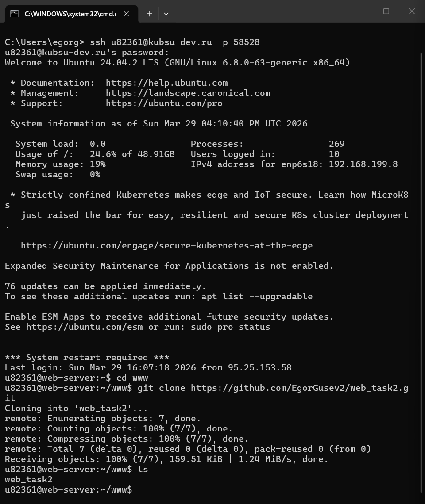
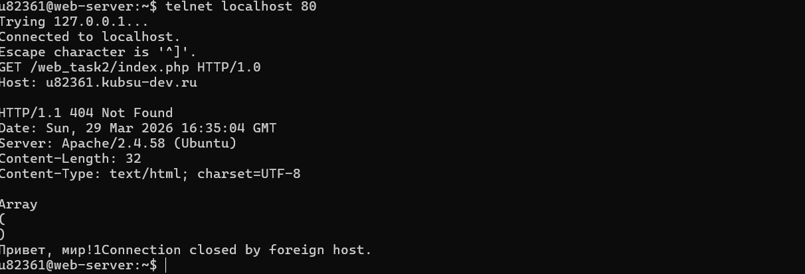
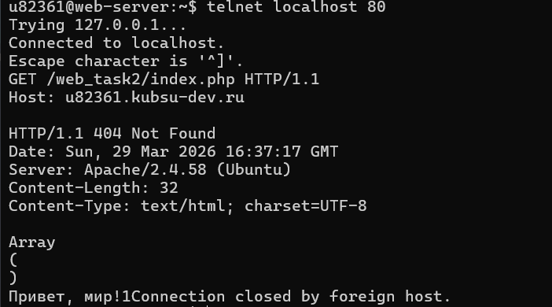
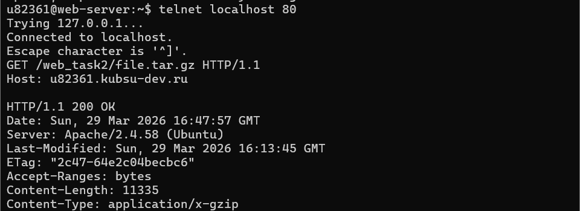
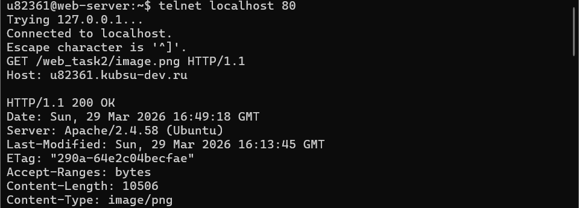
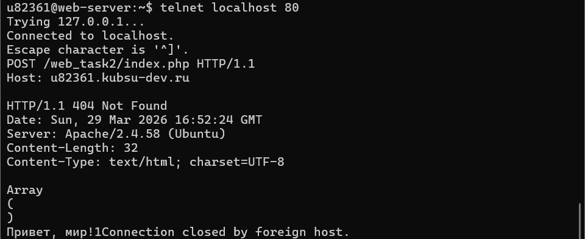
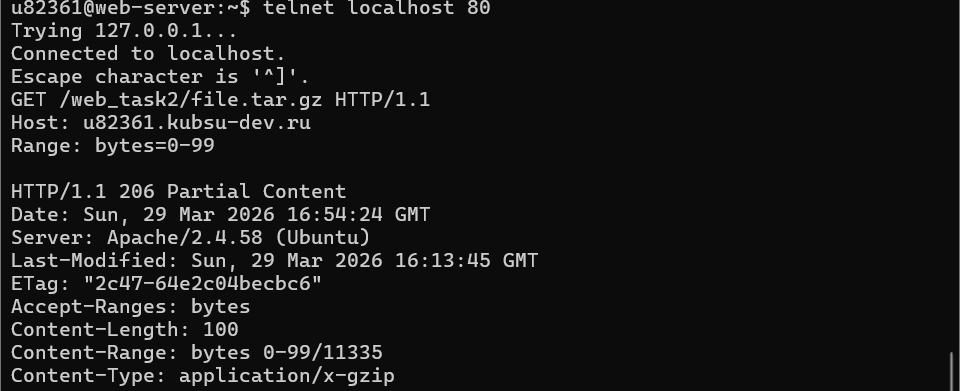
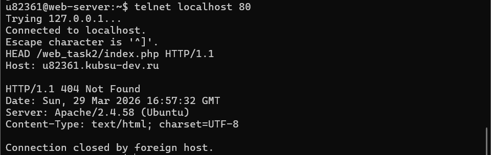

Файлы (index.php, file.tar.gz, image.png и др.) загружены в репозиторий GitHub, после чего размещены на учебном веб-сервере в каталоге /www/web_task2. Доступность файлов проверена в браузере по адресу учебного домена.


Выполнить GET-запрос к главной странице сервера с использованием протокола HTTP 1.0. Этот протокол не поддерживает постоянные соединения — после каждого запроса соединение закрывается.

Получение страницы index.php методом GET (протокол HTTP/1.1). В отличие от HTTP 1.0, этот протокол поддерживает постоянные соединения.

Определение размера файла file.tar.gz без скачивания (метод HEAD). HEAD запрашивает только заголовки ответа без тела, что позволяет получить метаинформацию о файле без его загрузки.

Определение типа содержимого (медиатипа) файла image.png (метод HEAD). Медиатип (MIME-type) определяется из заголовка Content-Type.

Отправка комментария на сервер по адресу /index.php (метод POST). POST передает данные в теле запроса, что требует указания заголовков Content-Type и Content-Length.

Получение первых 100 байт файла file.tar.gz (заголовок Range). Это позволяет получить только указанный диапазон байт, не скачивая весь файл.

Определение кодировки страницы index.php (метод HEAD).
